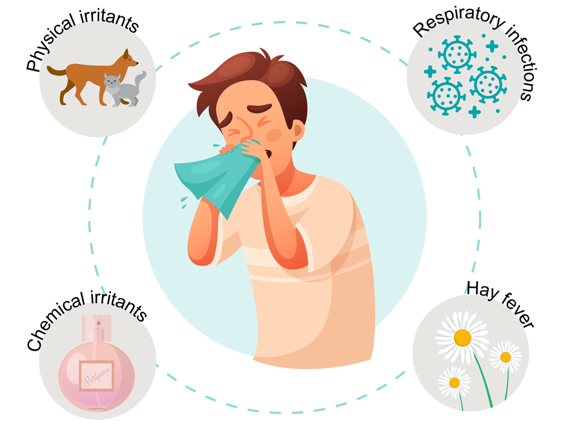

1. Introduction
Welcome to our comprehensive guide on sneezing, running, and blocked nose. If you
have
been experiencing these symptoms, you're not alone. Sneezing, a runny nose, and
nasal
congestion are common issues that can be caused by various factors. In this article,
we will
explore the dos and don'ts for managing these symptoms effectively. By following our
recommendations, you can find relief and improve your overall well-being.
2. Understanding Sneezing, Running, and Blocked Nose
:-

Before we dive into the dos and don'ts, let's gain a better understanding of these
symptoms.
Sneezing is a reflex action that helps to expel irritants from the nose. It is often
accompanied
by a runny or blocked nose, where the nasal passages become inflamed or congested,
making it difficult to breathe. These symptoms can be caused by allergies, common
cold,
sinusitis, or other underlying health conditions.
3. Common Causes
Sneezing, running, and blocked nose can have several causes. Allergies, such as hay
fever
or pet allergies, are a common trigger. Exposure to allergens like pollen, dust
mites, or pet
dander can result in these symptoms. Viral infections, such as the common cold, can
also
lead to sneezing and nasal congestion. Other causes may include sinusitis, nasal
polyps,
irritants like smoke or strong odors, or even changes in weather conditions
4. Dos for Sneezing, Running, and Blocked Nose
To alleviate the
discomfort associated with sneezing, running
and blocked nose, here are some recommended dos:

1. Maintain Good Hygiene Practices
- » Wash your hands regularly with
soap and water to
prevent the
spread of
germs.
- » Use hand sanitizers when soap
and water are not
available.
- » Avoid touching your face,
especially your nose and
eyes, to
minimize the
risk of infection.
2. Stay Hydrated
- » Drink plenty of fluids, such as
water and herbal teas,
to
keep your body hydrated.
- » Hydration helps thin the mucus
and reduces nasal
congestion.
3. Use Over-the-Counter Remedies
- » Over-the-counter
antihistamines, decongestants, or
nasal
sprays can provide temporary
relief.
- » Consult a pharmacist or
healthcare professional for
guidance
on suitable options
4. Practice Nasal Irrigation
- » Use a saline solution or nasal
irrigation kit to flush
out
irritants and mucus from your nasal
passages.
- » This can help alleviate
congestion and promote easier
breathing.
5. Apply Warm Compresses
- » Applying a warm compress to
your face can help relieve
sinus
pressure and ease nasal
congestion.
- » Use a warm towel or a steam
inhalation technique for
added
relief.
6. Try Natural Remedies
- » Use natural remedies like steam
inhalation with
essential
oils (e.g., eucalyptus or
peppermint) to clear your nasal passages.
- » Herbal supplements like ginger,
turmeric, or honey may
also
provide relief.
7. Take Rest and Manage Stress
- » Get adequate rest to support
your body's healing
process.
- » Practice stress management
techniques, such as deep
breathing or meditation, to reduce
the impact of stress on your immune system.
8. Seek Medical Advice if Symptoms Persist
- » If your symptoms persist for
more than a week or
worsen, it
is advisable to seek medical
advice
- » A healthcare professional can
diagnose the underlying
cause
and recommend appropriate
treatment options.
5. Don'ts for Sneezing, Running, and Blocked Nose
To
effectively manage sneezing, running, and blocked nose, it is important to avoid
certain
actions. Here are some key don'ts
:-
1. Avoid Triggers
- » Identify and avoid triggers
that worsen your symptoms.
- » Common triggers include
allergens, cigarette smoke, strong perfumes, and pollutants.
2. Don't Ignore Allergies
- » If you suspect allergies as the
cause of your symptoms, don't ignore them.
- » Consult an allergist to
identify specific allergens and develop a suitable management plan.
3. Avoid Excessive Use of Over-the-Counter Medications
- » While over-the-counter
medications can provide relief, avoid excessive or prolonged use.
- » Consult a healthcare
professional if you require medications for an extended period.
4. Don't Blow Your Nose Too Hard
- » Blowing your nose forcefully
can cause further irritation and may lead to complications.
- » Gently blow one nostril at a
time, if necessary, to avoid unnecessary strain.
5. Avoid Smoking and Exposure to Smoke
- » Smoking and exposure to
secondhand smoke can aggravate nasal symptoms and worsen
congestion
- » Quit smoking and minimize
exposure to smoke-filled environments.
6. Don't Neglect Proper Sleep
- » Lack of sleep can weaken your
immune system and worsen your symptoms.
- » Prioritize a good night's sleep
to support your body's natural healing mechanisms.
7. Avoid Self-Diagnosis and Self-Medication
- » Self-diagnosis and
self-medication can be risky and may not address the underlying cause.
- » Consult a healthcare
professional for an accurate diagnosis and appropriate treatment.
8. Don't Ignore
Chronic Symptoms :-
- » I- If you experience chronic or
recurring symptoms, don't ignore them.
- » Persistent sneezing, running,
or blocked nose may require further evaluation and
specialized treatment
Frequently Asked Questions
Conclusion :-
In conclusion, sneezing, running, and blocked nose can be uncomfortable and disruptive. By
following the dos and don'ts outlined in this article, you can effectively manage these
symptoms and improve your quality of life. Remember to maintain good hygiene, seek
appropriate medical advice when needed, and take proactive steps to prevent triggers. With
the right approach, you can find relief and breathe easier